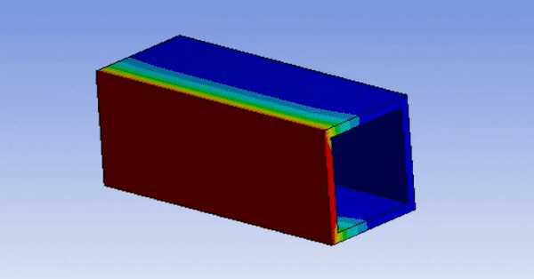
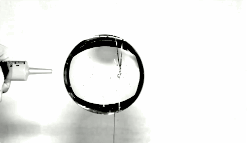
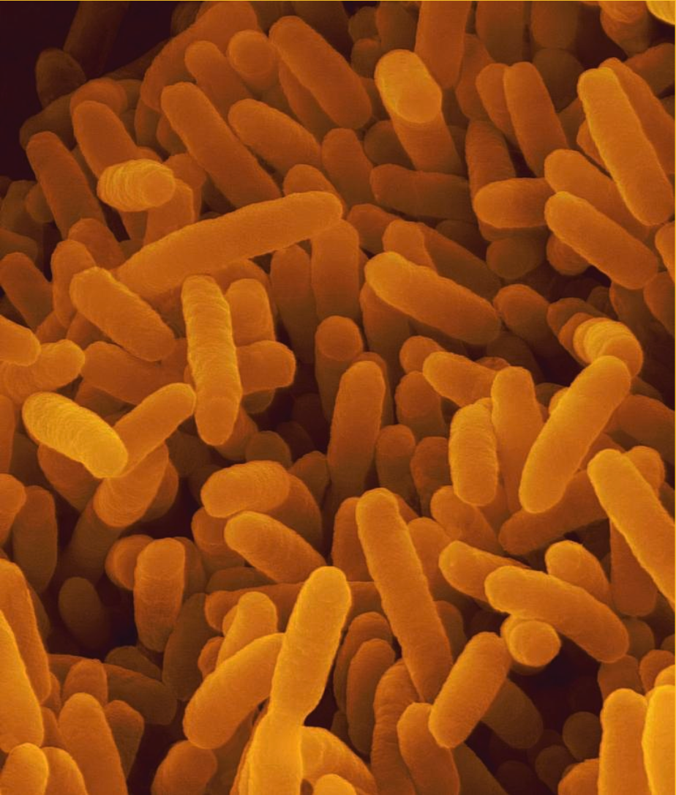

Nanosatellite or nanosat is the term to describe a satellite which has a
wet mass of about 1kg to 10 kg.
In spite of their small size, they perform all the tasks that a conventional
satellite does, with an added advantage of lesser cost.
Nanosatellites play a huge role in our economy and research development
as it provides a great stand to various research opportunities.
According to IARU, the survey conducted in 2014 says that there are
around 685 nanosatellites and 613 cubesats launched in total of which 405
are in orbit where 321 are operational and 71 of them were destroyed on
launch. But now, we are in an era where cubesats are of a great deal and are
being developed rapidly.
HISTORY
In 1999, California Polytechnic State University (Cal Poly) and Stanford University
developed the CubeSat specifications to promote and develop the skills necessary for the design, manufacture,
and testing of small satellites. The rest is history.
SPECIFICATIONS
Spacecraft
RVSAT-1
Mission Type
System Design and Verification
Payload Objective
Microbiological growth analysis
Orbit Type
Polar LEO
Organization
RV College of Engineering
Launch Agency
ISRO
Mission Time
28-56 days
Mass
2.00kg
Dimensions
100mm × 100mm × 227mm (2U CubeSat)
Altitude
500km approx
Peak Power Consumption
10 W
MISSION
The aim of RVSAT-1 is to perform a microbiological growth experiment under microgravity conditions in Low Earth Orbit by utilizing the orbital platform provided by PSLV stage 4.
The project demands engineering of critical environmental systems for sustaining the microbe in space. RVSAT-1 uses the orbital platform provided by 4th stage of PSLV to design a cost effective payload with impeccable quality and conforming to highest standards.
Team Antariksh is grateful for the opportunities that ISRO is providing students to learn something that is new and is literally out of this world! The Announcement of Opportunity program launched by ISRO is the main driving force which encouraged us to start this project.
Major challenges in the domain of space technology have always been solved through international collaboration. Through its various policies, ISRO encourages Indian academia to engage in international collaborations to facilitate the development of space technology at a global level.
The decision of building a payload was taken for the sole purpose of following the lines of ISRO’s main objectives and achievements, them being, making low budget space projects, broadening the horizons of the research sector and uplifting the pride of our nation through international collaboration.
Subsystems
For completion of the project under schedule, the team is divided into functional hierarchy, with five domain specific well-functioning subsystems.
ECL
assets/img/universe/ecl.gif
ECL
About
The Onboard Computer plays the role of the brain for any space mission. Its function ranges from experiment automation to data acquisition, from power delivery to data storage and communication. It is also responsible for carrying numerous checks during the mission and store the health monitoring data.
The Electronics Control and Logic subsystem in RVSAT-1 is responsible for the development of mission-critical hardware and software for task automation while keeping in mind the system's vulnerability in harsh environments. It is going to handle an operating sequence for the various functions of the payload in orbit. The design of the ECL is based on achieving this operating sequence with the maximum efficiency and minimum risk.

Thermal
assets/img/universe/thermal.gif
Thermal
About
The on-orbit space environment presents numerous challenges, one of them being rapid temperature cycling. The dominating factors affecting the fluctuation of temperature on-orbit are direct solar, albedo and Earth IR.
The Thermal Subsystem strives to maintain the temperature of the payload, and its components, within the operational limits and makes sure that it does not cross the survival limit. The thermal subsystem uses a combination of both active and passive mechanism for precise thermal control.

Fluids
assets/img/universe/fluid.gif
Fluids
About
Systems designed for space missions carrying fluids, especially liquids, have to deal with their varied behaviour due to space environment and accommodate the impact they have on the system. Having no fixed shape and resistance to shear forces, fluids tend to play a major role in the successful functioning of any system in space.
Fluids subsystem studies and researches the behaviour of fluid being carried onboard, under the influence of microgravity and temperature variation to understand their effect on RVSAT-1.
Structures
assets/img/universe/structures.gif
Structures
About
The Structure of the payload must be durable enough to withstand the harsh launch conditions and space environment. The components within the payload along with various mechanisms need to be properly designed, positioned and protected.
The Structures & Mechanisms subsystem takes care of the design, analysis and testing of the skeletal structure of the payload and necessary mechanisms. The activities followed by the subsystem include extensive ideation, design optimization, simulation and testing to ensure the endurance of the structures and success of the mission.

Microbiology
assets/img/universe/payload.png
Microbiology
About
Any mission involving a biological payload is a sensitive one, requiring extensive research and conduction of experiments for the development and successful working of the system. The experiments designed have to be conducted beforehand, by strictly adhering to the protocols, to ensure the success of the mission.
The microbiology subsystem deals with extensive research of the microbe that is to be sent to space and the various components to be chosen to ensure the survival and success of the experiment. This experiment is tested with the utmost care by the subsystem through numerous ground experiments to achieve accurate and analyzable data and replicate the same in space.


assets/img/universe/ecl.gif